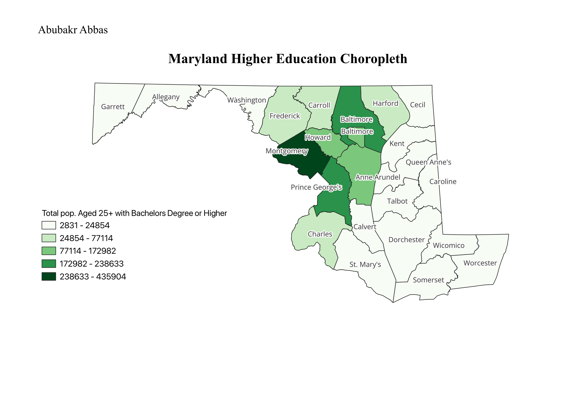

Homework 6 Part 1: Census data choropleth
Abubakr Abbas
My map is a choropleth that shows the number of people aged 25 or older who have a bachelor's degree or higher in all the counties within the state of Maryland.

Data used for this project
CSV dataset
Link to shapefile